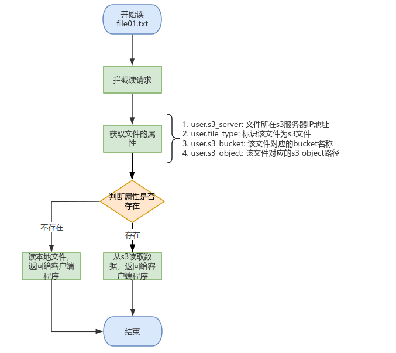
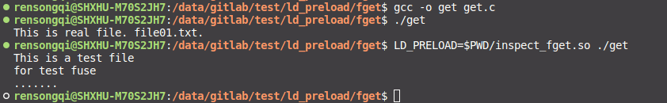
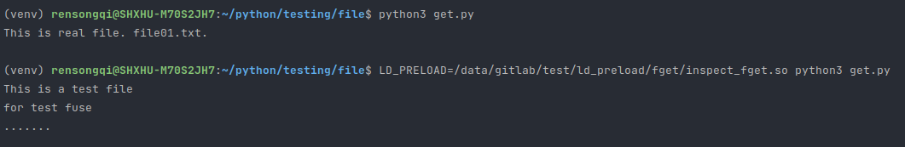
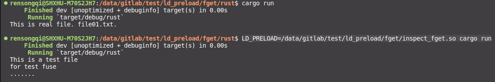

1 前言
基于LD_PRELOAD实现在用户态拦截应用程序的读请求，从文件的属性中获取该文件所在目标s3等位置信息，从s3获取数据信息，并返回给客户端程序
参考文章: 使用LD_PRELOAD注入程序
2 实现架构

3 安装依赖
以ubuntu为例
# 安装libcurl
apt-get install curl
apt-get install libcurl4-gnutls-dev
sudo ln -s /usr/include/x86_64-linux-gnu/curl /usr/include/curl
sudo ln -s /usr/include/x86_64-linux-gnu/curl /usr/include/curl/curl
# 安装libxml2
apt-get install libxml2
apt-get install libxml2-dev
# 克隆libs3
git clone https://github.com/bji/libs3.git
# 编译
cd libs3
make && make install
# 编译s3_get_object.c ，此步骤仅测试，可不用操作
gcc -o s3_get_object s3_get_object.c -ls3 -lcurl
# 编译inspect_fget.so
gcc -shared -fPIC inspect_fget.c -o inspect_fget.so -ldl -ls3 -lcurl4 测试方法
- 创建测试文件
echo "This is real file. file01.txt." >> file01.txt- 给文件设置属性
- GPFS文件系统上设置的属性可以永久生效，属性存在inode中
- 其它普通文件系统如xfs、ext等文件系统的文件设置完属性后
一旦文件被修改则属性也随之消失
# 设置属性
# key前缀必须带user. 属性值 文件名
setfattr --name user.s3_object --value s3_file01.txt file01.txt
setfattr --name user.s3_bucket --value devops file01.txt
# 获取属性
getfattr -d file01.txt
# 删除属性
setfattr --remove user.s3_object file01.txt4.1 C
inspect_fget.so 实现了
fgets()，也可实现fread()和fscanf()
测试代码get.c
#include <stdio.h>
#include <stdlib.h>
int main() {
FILE *file;
char buffer[256];
const char *filename = "file01.txt";
file = fopen(filename, "r");
if (file == NULL) {
perror("open file failed.");
return 1;
}
while (fgets(buffer, sizeof(buffer), file) != NULL) {
printf("%s", buffer);
}
fclose(file);
return 0;
}# 编译
gcc -o get get.c
# 读本地文件
./get
# 配置LD_PRELOAD读
LD_PRELOAD=inspect_fget.so ./get
4.2 Python
inspect_fget.so 实现了
read()
测试代码get.py
with open('file01.txt', 'r') as file:
content = file.read()
print(content)# 读本地文件
python3 get.py
# 配置LD_PRELOAD读
LD_PRELOAD=inspect_fget.so python3 get.py
4.3 Rust
inspect_fget.so 实现了
read()
测试代码main.rs
use std::fs::File;
use std::io::{self, BufReader, Read};
fn main() -> io::Result<()> {
let file = File::open("file01.txt")?;
let mut reader = BufReader::new(file);
let mut content = String::new();
reader.read_to_string(&mut content)?;
println!("{}", content);
Ok(())
}# 新建项目
cargo new rust
# 读文件
cargo run
# 配置LD_PRELOAD读
LD_PRELOAD=inspect_fget.so cargo run
4.4 Go
待测试，需要开启cgo